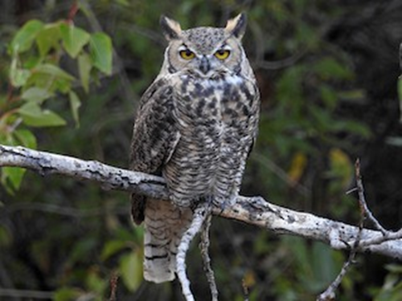
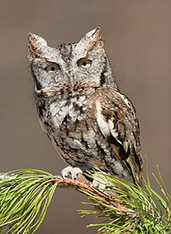
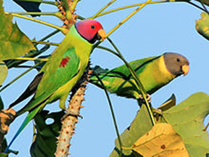
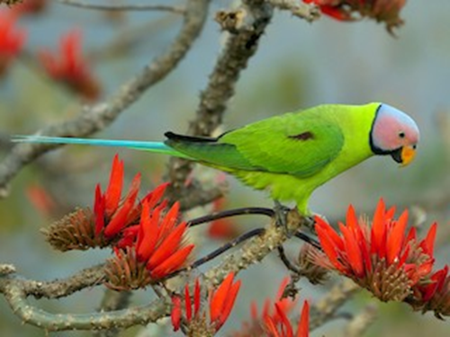
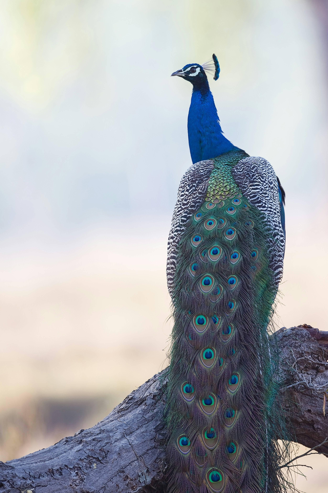
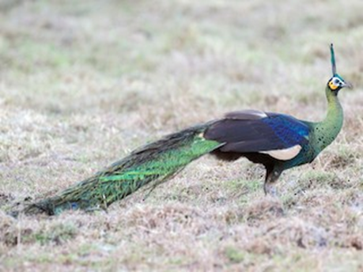

Common name – black vulture
Scientific name - Coragyps atratus
Features - It has black plumage, a featherless, grayish-black head and neck, and a short, hooked beak. With a wingspan of 1.5 m (4.9 ft)
Region - mid-Atlantic States, the southernmost regions of the Midwestern United States, the southern United States, Mexico, Central America and most of South America.
Turkey vulture
Cathartes aura
Found in Americas from southern Canada
They are large black coloured with a red featherless head. When soaring their wings make a characteristic V shape. Their wingspan is about 6 feet.

Owls
Great horned owl
Bubo virginianus
Found in america
Are large and thick bodies with two prominent feathered tufts on their head. They are mottled gray-brown with a reddish brown facial disk and large yellow eys. The flight and tail feathers are distrintly barred dark and light.

Owls
Eastern screech owl
Megascops asio
Found in eastern north America
Are mostly gray, reddish brown or brown with yellow eyes. They are short, stocky and have large heads with almost no neck. Their wings are rounded with a short, square tail

Parrots
Plum headed parakeet
Psittacula cyanocephala
Found in endemic to Indian subcontinent
Features males have a plum coloured head while females have frayish blue head

Blossom headed parakeet
Psittacula roseate
Found in Eastern Bangladesh, Bhutan, Northeast India and Nepal, eastwards into Southeast Asia (Cambodia, Laos, Myanmar, Thailand and Vietnam) and also China.
Features This is a green parrot, 30 cm long with a tail up to 18 cm. The male's head is pink becoming pale blue on the back of the crown, nape and cheeks. There is a narrow black neck collar and a black chin stripe.

Peacock
Indian peafowl
Pavo critstatus
Found - native to India and Sri Lanka, in South Asia
Features The beautiful feathers that cover the tails of a peacock are 5 feet (1.5 meters) long—longer than the bird's body—and can be displayed in a spectacular fan of brilliant colors. These long feathers actually grow from the bird's back not the tail. He elevates them by raising the much shorter tail feathers underneath them.

Green peafowl
Pavo muticus
Found - native to the tropical forests of Southeast Asia
Features - The male is 1.8 - 3 m in total length, but this includes its tail covert (or "train") which itself measures 1.4 - 1.6 m. The tail coverts are even longer than those of the male Indian peafowl, but are shorter than those of the arguses. The adult female is around half the total length of the breeding male at 1 - 1.1 m in length. It has a relatively large wingspan that averages around 1.2 m and can reach 1.6 m in big males. The green peafowl is capable of sustained flight and is often observed on wing.